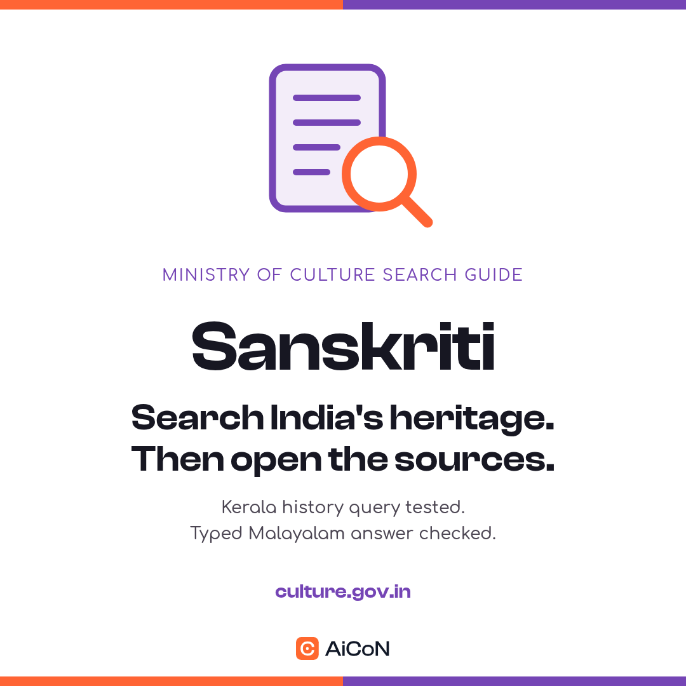

Sanskriti: search Indian heritage sources from one official website
Looking for historical documents about Kerala, a museum collection or material for a heritage project? The Ministry of Culture's new Sanskriti search offers a starting point on culture.gov.in. Its useful difference is the source trail: answers lead back to material from the Ministry and its institutions, rather than leaving you with an unsupported summary.

What has launched?
Akashvani's 16 November report says the Ministry launched an AI-powered semantic search and conversational assistant to bring together information across more than 65 Ministry and institutional websites. The report describes Bhashini support for 22 Indian languages, plus voice input and output. That is the announced scope, not a claim that we tested every language or feature.
What worked in our check?
On 17 November, we opened the Ministry homepage while signed out, used the Ask Sanskriti search field and asked where to find digitised historical documents about Kerala. The service produced a quick answer, a completed detailed answer, source references and a separate Sources view. No login, payment or card was requested during this public text-search test.
We opened a citation card for Dr. Palpu's Petition Writings and Kerala's Pasts and followed its source-page link. It resolved to the actual PMML-hosted PDF by Udaya Kumar. This checked one useful source trail. It did not verify every historical statement in the generated answer.
Can you ask in Malayalam?
We selected Malayalam in the answer-language control and asked, "കേരളത്തിന്റെ ചരിത്രരേഖകൾ ഓൺലൈനിൽ എവിടെ ലഭിക്കും?" The service returned a Malayalam quick answer with source references. The earlier English answer stayed in English, so changing the language setting should not be treated as proof that an existing answer has been translated.
We did not test spoken Malayalam, read-aloud quality or all 22 announced languages. Our check supports the narrower claim that a typed Malayalam question returned a Malayalam answer.
How to try it
- Open the official Ministry homepage using the direct link below. Find Ask Sanskriti, enter a specific question and choose AI Search.
- Start with the quick answer. If the service offers a detailed answer or live records, check those too instead of stopping at the first line.
- Open a source reference or the Sources view. A citation card can expose the original source-page link.
- Read the original document, including its date and context. For a project, cite that document rather than treating the AI summary as your primary source.
Where it helps, and where to be careful
This is most useful for finding a path into scattered official heritage collections. It is not a general-purpose replacement for every search engine or chatbot. A source can be genuine but old, and a generated summary can still misread it or include a result that only partly fits your question.
The service itself warns that AI responses may not always be accurate. Check important information against the original source. Our test used only public, non-personal questions; we did not upload files, create an account or test any application process.
Open the service and sources
- Ministry of Culture homepage: use Ask Sanskriti.
- Akashvani's official launch report, 16 November 2026.
- The PMML source document checked during our test.
- Ministry website policy and accuracy disclaimer.
Independent AiCoN guide. Not a Ministry announcement or endorsement. No Ministry screenshots, logos or document pages are reproduced here.